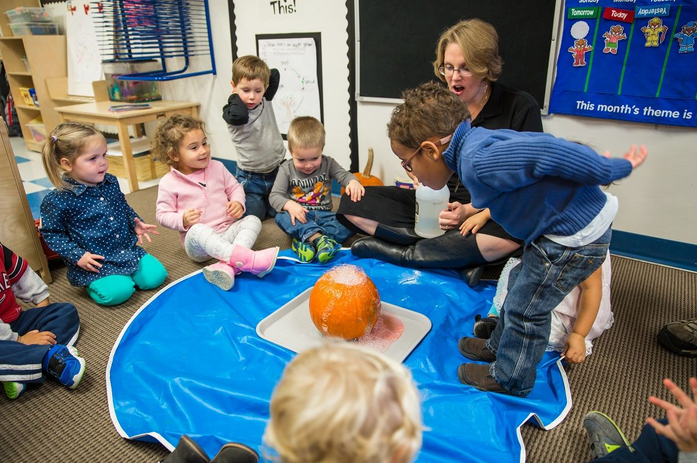
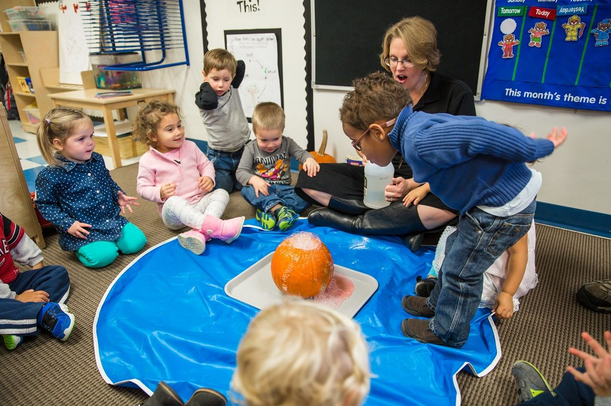
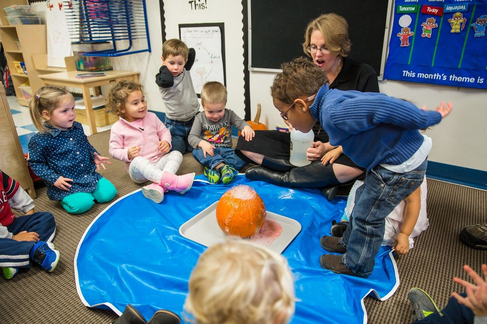

If you’re looking for a unique science learning experience where you can innovate, work with other enthusiastic students, earn Grade 12 science and math credits and prepare for university, the Ontario Science Centre Science School might be for you.Students from across the province can apply for a full semester of Grade 12 science and math at our Science School.
You will earn credits that line up with the Ontario curriculum, work in group projects with like-minded students, create projects to engage with Science Centre visitors and immerse yourself in a one-of-a-kind innovation class.
Kick off your Halloween weekend with Family Trivia Night! Join us on Zoom on Friday, October 29 at 6:30 p.m. to test your knowledge of spooky science, from Earth’s creepy crawlies to the mysterious depths of outer space. Plus, admire live views of Venus, Saturn, Jupiter and other eerie celestial objects from the Royal Astronomical Society of Canada’s telescope. All you need to play is a piece of paper and a pencil—and family members who are ready for a frightfully fun time!
